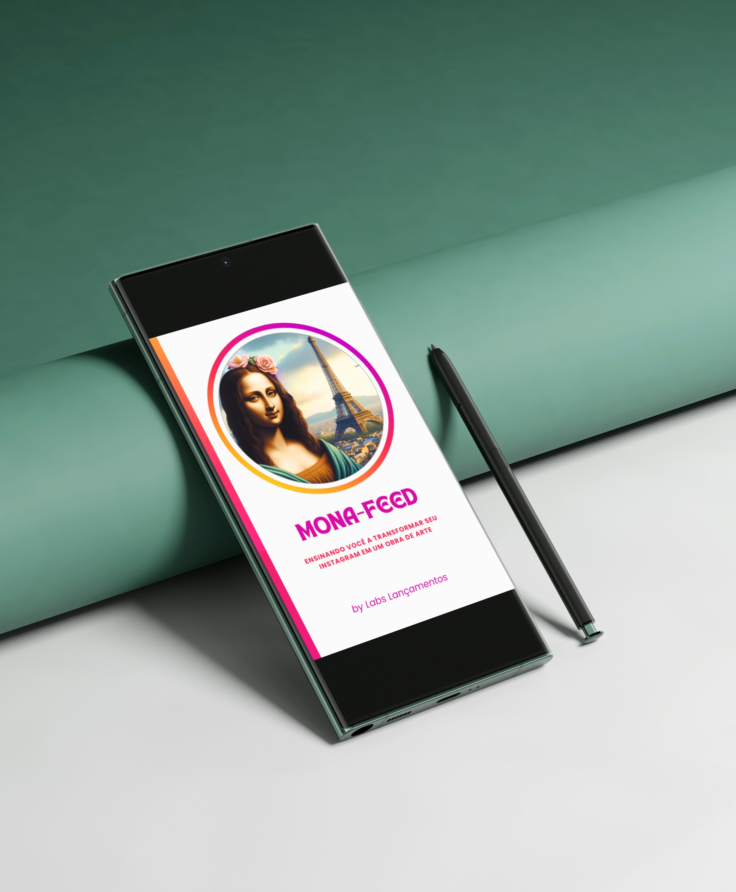

Um guia pensado para o dia a dia
O Mona-Feed foi criado para ser consultado de forma leve, prática e visual, acompanhando sua evolução no digital.
O Mona-Feed é um e-book visual pensado para quem quer elevar a estética do perfil, organizar melhor o conteúdo e transmitir mais valor no digital.

O Mona-Feed foi criado para unir estética, organização e percepção de valor em um só material. Ao longo do conteúdo, você encontra referências visuais, direcionamentos práticos e uma visão mais estratégica para tornar o seu Instagram mais coerente, forte e atrativo.
É um material pensado para quem deseja apresentar melhor sua imagem no digital e construir um perfil com mais intenção, consistência e identidade.
Ideal para criadores, empreendedores, profissionais autônomos e marcas pessoais.
Direção visual, organização de conteúdo e caminhos para um perfil mais profissional.
E-book digital com linguagem acessível, visual refinado e foco em aplicação prática.
Uma amostra visual do que você vai encontrar no Mona-Feed: clareza, estética e direção.
Uma apresentação visual pensada para aproximar o conteúdo da realidade de quem busca mais presença e consistência no Instagram.
O Mona-Feed foi criado para ser consultado de forma leve, prática e visual, acompanhando sua evolução no digital.

Mais do que um material bonito, este é um conteúdo feito para orientar, organizar ideias e apoiar uma presença mais estratégica.

Cada parte do material foi pensada para transformar inspiração em direção, ajudando você a construir um perfil com mais intenção.
Uma proposta para fortalecer não apenas o visual do perfil, mas também a forma como ele é percebido.
Um perfil mais coerente, bonito e alinhado com a imagem que você deseja transmitir.
Uma apresentação melhor tende a tornar o perfil mais profissional, forte e confiável.
O visual deixa de ser aleatório e passa a sustentar uma presença digital mais estratégica.
Organização e direção visual ajudam a produzir com mais constância e qualidade.
Esta página apresenta apenas parte do universo visual do Mona-Feed. Para acessar o material completo, clique abaixo e vá para a página oficial de compra.